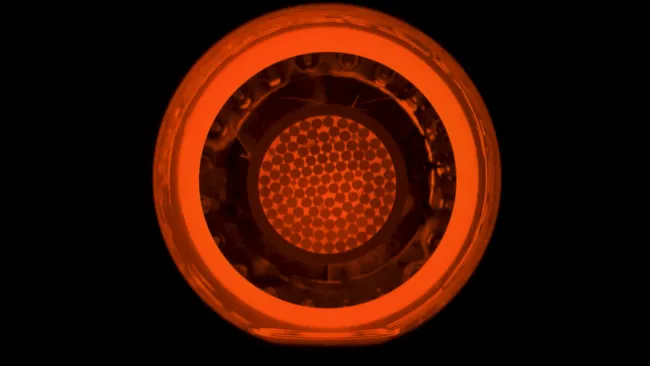

AstroSpace
AstroSpacePrueban con éxito un nuevo motor de propulsión iónica para misiones al espacio profundo
El sistema de alta eficiencia energética promete recortar drásticamente los tiempos de viaje hacia los asteroides más alejados del sistema solar.

Fuente: SPACELa exploración de los confines del sistema solar exige superar las limitaciones de los combustibles químicos tradicionales. En este contexto, ingenieros aeroespaciales completaron con éxito una serie de pruebas prolongadas en tierra para un nuevo propulsor de plasma de alta potencia.
Este tipo de tecnología ioniza gases nobles mediante campos electromagnéticos para expulsarlos a velocidades descomunales. Aunque generan un empuje inicial muy suave, su capacidad de operar de manera continua durante meses o años permite alcanzar velocidades finales inaccesibles para los cohetes convencionales.
"La propulsión iónica es la llave maestra para hacer que los viajes tripulados y de carga pesada hacia Marte y los gigantes gaseosos sean económicamente viables."
Se espera que las primeras pruebas de vuelo de este sistema se implementen en una sonda no tripulada destinada a cartografiar asteroides cercanos a finales de esta década.